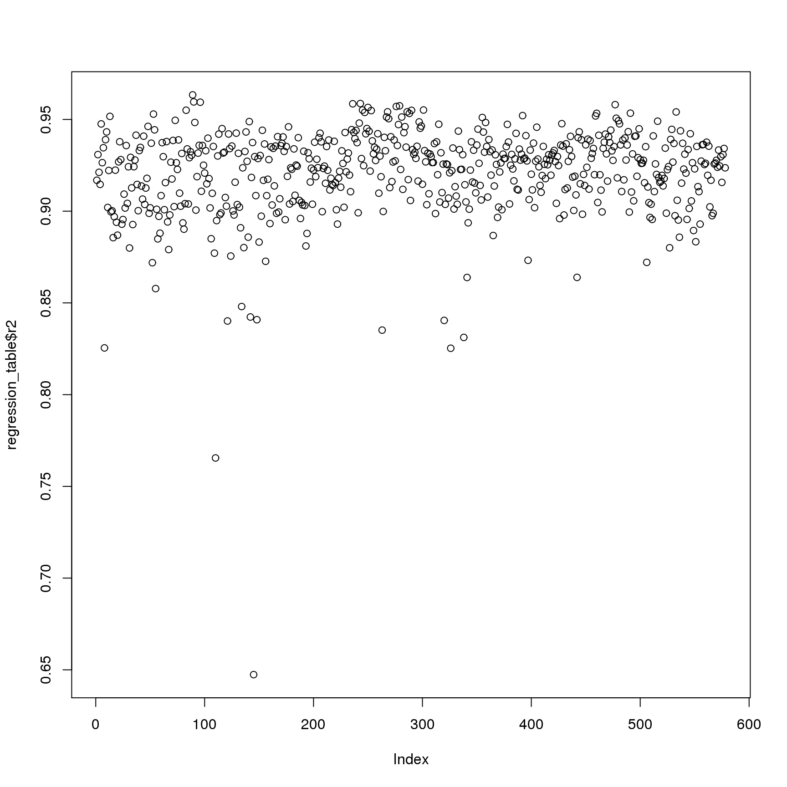
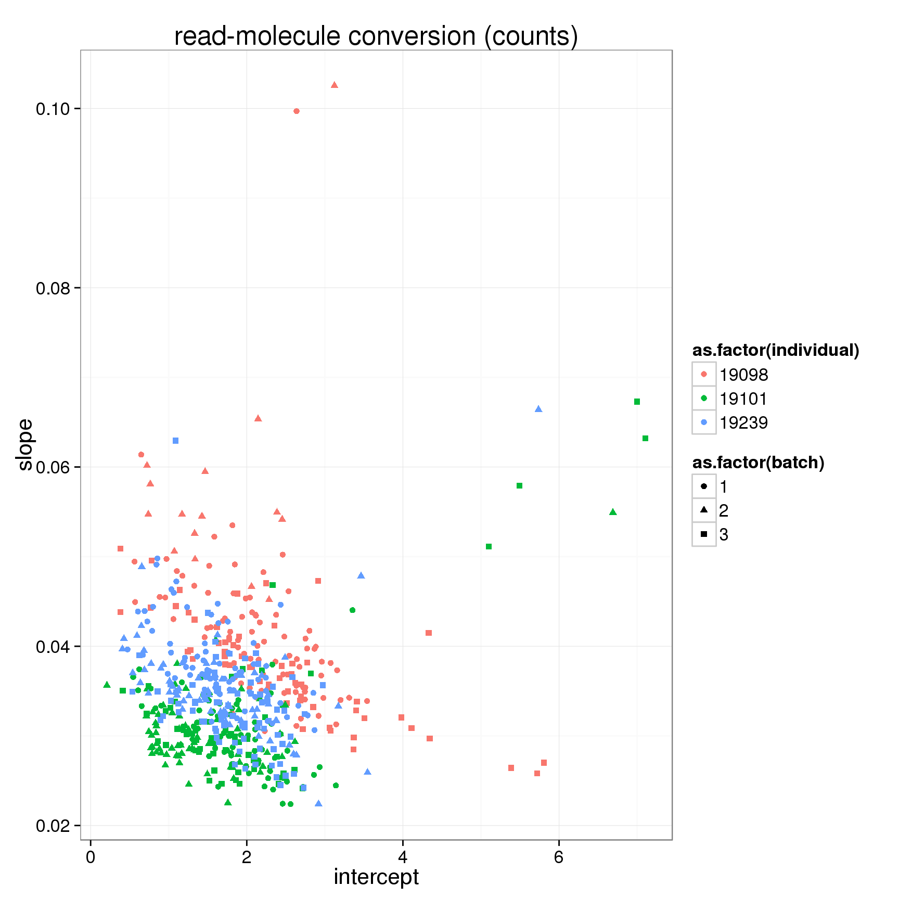
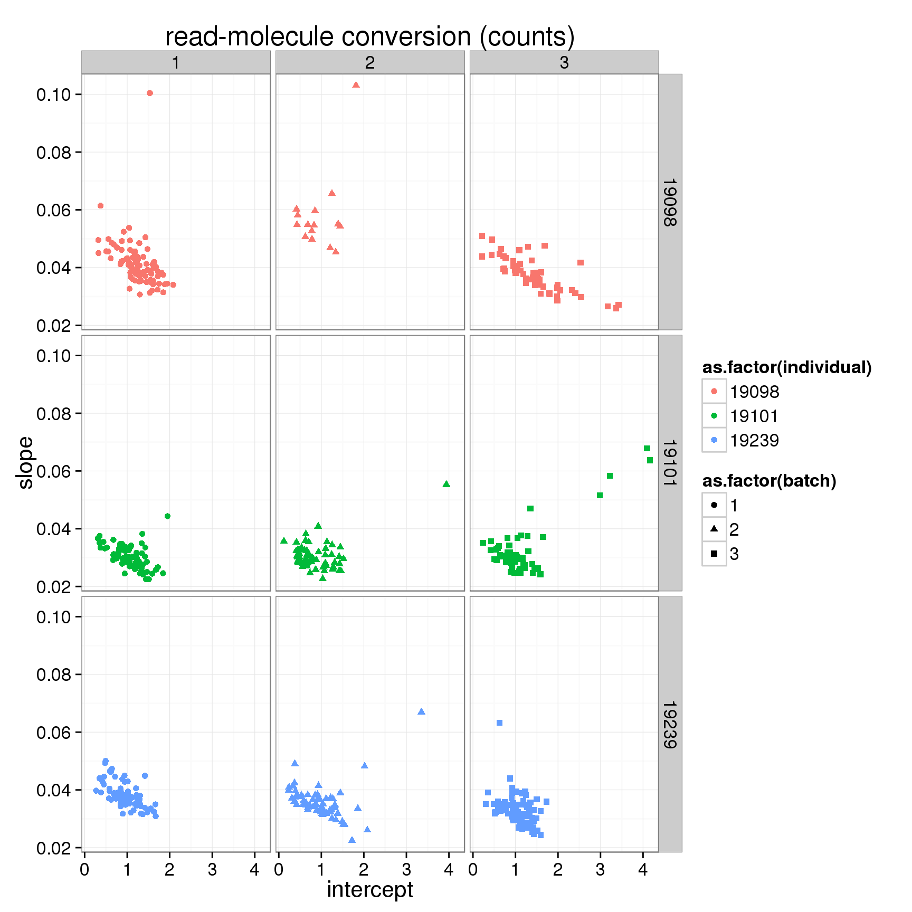
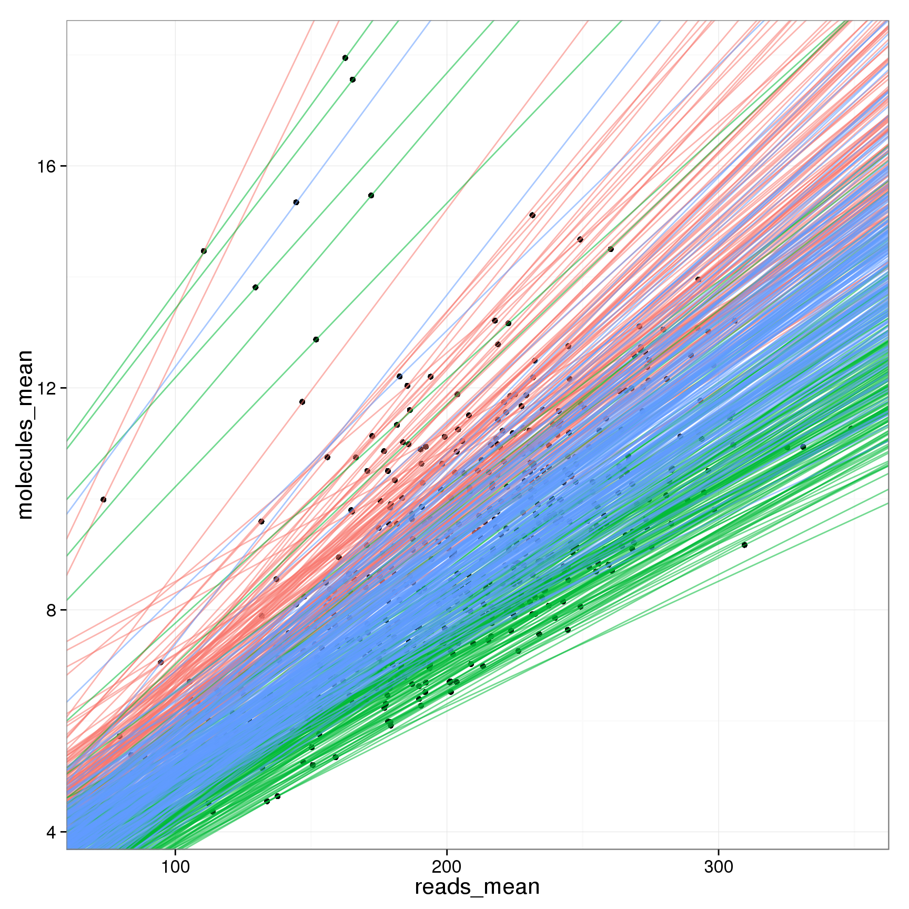
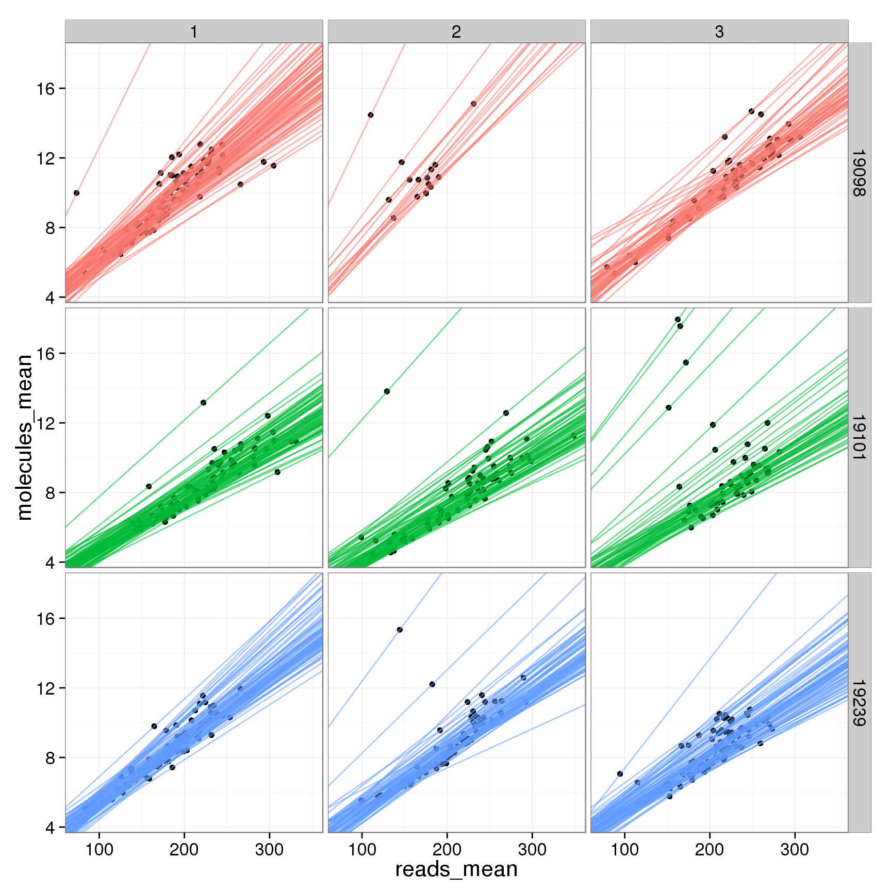
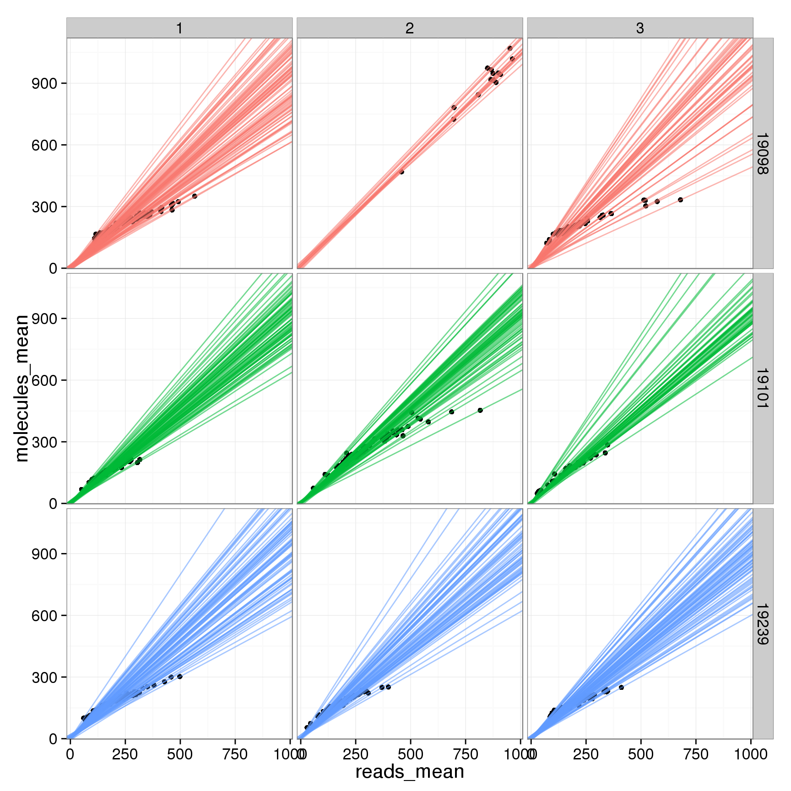
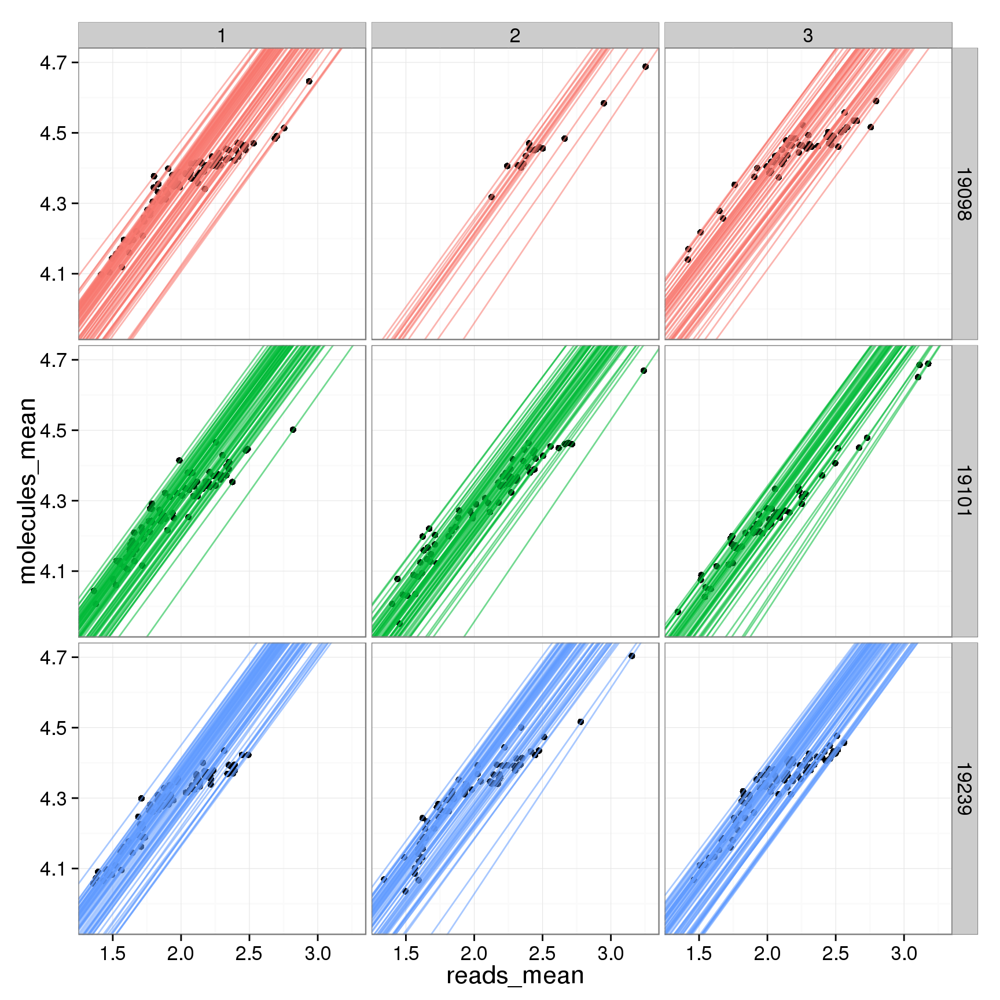

Compare read and molecule counts in single cells per batch
PoYuan Tung
2015-08-24
Last updated: 2015-09-04
Code version: 2ceea9387c87573d9a83285ea3beeb7e13e4c13a
Comparing the conversion of reads to molecules for each cell. Used three different metrics:
- Raw counts
- Log2 counts (pseudocount of 1)
- cpm counts (no log transformation)
- Log2 TMM-normalized counts per million (pseudocount of 0.25)
Input
library("dplyr")
library("ggplot2")
theme_set(theme_bw(base_size = 16))
library("edgeR")
source("functions.R")
library("tidyr")Input annotation.
anno <- read.table("../data/annotation.txt", header = TRUE,
stringsAsFactors = FALSE)
head(anno) individual batch well sample_id
1 19098 1 A01 NA19098.1.A01
2 19098 1 A02 NA19098.1.A02
3 19098 1 A03 NA19098.1.A03
4 19098 1 A04 NA19098.1.A04
5 19098 1 A05 NA19098.1.A05
6 19098 1 A06 NA19098.1.A06Input read counts.
reads <- read.table("../data/reads.txt", header = TRUE,
stringsAsFactors = FALSE)Input molecule counts.
molecules <- read.table("../data/molecules.txt", header = TRUE,
stringsAsFactors = FALSE)Input list of quality single cells.
quality_single_cells <- scan("../data/quality-single-cells.txt",
what = "character")Keep only the single cells that passed the QC filters.
reads <- reads[, colnames(reads) %in% quality_single_cells]
molecules <- molecules[, colnames(molecules) %in% quality_single_cells]
anno <- anno[anno$sample_id %in% quality_single_cells, ]
stopifnot(dim(reads) == dim(molecules),
nrow(anno) == ncol(reads))Distribution
Look at the distribution of fold change to mean.
## calculate mean
reads_mean <- apply(reads, 1, mean)
molecules_mean <- apply(molecules, 1, mean)
distribution <- data.frame(reads_mean, molecules_mean)
## calculate fold change to mean
distribution$fold_change_read <- log2(reads_mean/mean(reads_mean))
distribution$fold_change_molecule <- log2(molecules_mean/mean(molecules_mean))
## select ERCC
distribution$ERCC <- grepl("ERCC", rownames(distribution))
## color palette
cbPalette <- c("#999999", "#0000FF", "#990033", "#F0E442", "#0072B2", "#D55E00", "#CC79A7", "#009E73")
ggplot(distribution, aes(x = fold_change_molecule, y = fold_change_read, col = ERCC)) + geom_point(size = 3, alpha = 0.5) + scale_colour_manual(values=cbPalette) + stat_function(fun= function(x) {x}, col= "#56B4E9") + labs(x = "log2 fold change to mean (molecule)", y = "log2 fold change to mean (reads)")
Filter
Only keep the following genes:
- ERCC genes with at least one molecule observed in at least one single cell
ercc_keep <- rownames(molecules)[grepl("ERCC", rownames(molecules)) &
rowSums(molecules) > 1]- The top expressed endogenous genes in terms of mean molecule counts per million
num_genes <- 12000
mean_cpm <- molecules %>%
filter(!grepl("ERCC", rownames(molecules))) %>%
cpm %>%
rowMeans
gene_keep <- rownames(molecules)[!grepl("ERCC", rownames(molecules))][order(mean_cpm, decreasing = TRUE)][1:num_genes]Filter the genes:
reads <- reads[rownames(reads) %in% c(gene_keep, ercc_keep), ]
molecules <- molecules[rownames(molecules) %in% c(gene_keep, ercc_keep), ]Transformation
In addition to comparing the raw counts of reads and molecules, we compare the log2 counts and the log counts per million.
For the log counts, I add a pseudocount of 1.
reads_log <- log2(reads + 1)
molecules_log <- log2(molecules + 1)standardized by cmp and log-transform
reads_cpm <- cpm(reads, log = FALSE)
molecules_cpm <- cpm(molecules, log = FALSE)Calculate cpm for the reads data using TMM-normalization.
norm_factors_reads <- calcNormFactors(reads, method = "TMM")
reads_tmm <- cpm(reads, lib.size = colSums(reads) * norm_factors_reads,
log = TRUE)And for the molecules.
norm_factors_mol <- calcNormFactors(molecules, method = "TMM")
molecules_tmm <- cpm(molecules, lib.size = colSums(molecules) * norm_factors_mol,
log = TRUE)conversion in each single cell
Counts
Compare the counts. (1) all genes. (2) only ERCC. (3) without ERCC, only endogenous genes
## linear regression per cell and make a table with intercept, slope, and r-squared
regression_table <- as.data.frame(do.call(rbind,lapply(names(reads),function(x){
fit.temp <- lm(molecules[,x]~reads[,x])
c(x,fit.temp$coefficients,summary(fit.temp)$adj.r.squared)
})))
names(regression_table) <- c("sample_id","Intercept","slope","r2")
regression_table$Intercept <- as.numeric(as.character(regression_table$Intercept))
regression_table$slope <- as.numeric(as.character(regression_table$slope))
regression_table$r2 <- as.numeric(as.character(regression_table$r2))
plot(regression_table$r2)
anno_regression <- merge(anno,regression_table,by="sample_id")
ggplot(anno_regression,aes(x=Intercept,y=slope,col=as.factor(individual),shape=as.factor(batch))) + geom_point() + labs(x = "intercept", y = "slope", title = "read-molecule conversion (counts)")
ggplot(anno_regression,aes(x=Intercept,y=slope,col=as.factor(individual),shape=as.factor(batch))) + geom_point() + labs(x = "intercept", y = "slope", title = "read-molecule conversion (counts)") + facet_grid(individual ~ batch)
## plot all the lines
anno_regression$reads_mean <- apply(reads, 2, mean)
anno_regression$molecules_mean <- apply(molecules, 2, mean)
ggplot(anno_regression, aes(x= reads_mean, y= molecules_mean)) + geom_point() + geom_abline(aes(intercept=Intercept, slope=slope, col=as.factor(individual), alpha= 0.5), data=anno_regression) 
ggplot(anno_regression, aes(x= reads_mean, y= molecules_mean)) + geom_point() + geom_abline(aes(intercept=Intercept, slope=slope, col=as.factor(individual), alpha= 0.5), data=anno_regression) + facet_grid(individual ~ batch)
Only ERCC genes
## grep ERCC
reads_ERCC <- reads[grep("ERCC", rownames(reads)), ]
molecules_ERCC <- molecules[grep("ERCC", rownames(molecules)), ]
## linear regression per cell and make a table with intercept, slope, and r-squared
regression_table_ERCC <- as.data.frame(do.call(rbind,lapply(names(reads_ERCC),function(x){
fit.temp <- lm(molecules_ERCC[,x]~reads_ERCC[,x])
c(x,fit.temp$coefficients,summary(fit.temp)$adj.r.squared)
})))
names(regression_table_ERCC) <- c("sample_id","Intercept","slope","r2")
regression_table_ERCC$Intercept <- as.numeric(as.character(regression_table_ERCC$Intercept))
regression_table_ERCC$slope <- as.numeric(as.character(regression_table_ERCC$slope))
regression_table_ERCC$r2 <- as.numeric(as.character(regression_table_ERCC$r2))
plot(regression_table_ERCC$r2)
anno_regression_ERCC <- merge(anno,regression_table_ERCC,by="sample_id")
ggplot(anno_regression_ERCC,aes(x=Intercept,y=slope,col=as.factor(individual),shape=as.factor(batch))) + geom_point() + labs(x = "intercept", y = "slope", title = "read-molecule conversion ERCC genes (counts)") + facet_grid(individual ~ batch)
## plot all the lines
anno_regression_ERCC$reads_mean <- apply(reads_ERCC, 2, mean)
anno_regression_ERCC$molecules_mean <- apply(molecules_ERCC, 2, mean)
ggplot(anno_regression_ERCC, aes(x= reads_mean, y= molecules_mean)) + geom_point() + geom_abline(aes(intercept=Intercept, slope=slope, col=as.factor(individual), alpha= 0.5), data=anno_regression_ERCC) 
ggplot(anno_regression_ERCC, aes(x= reads_mean, y= molecules_mean)) + geom_point() + geom_abline(aes(intercept=Intercept, slope=slope, col=as.factor(individual), alpha= 0.5), data=anno_regression) + facet_grid(individual ~ batch)
without ERCC genes, only endogenous genes
## grep ENSG
reads_ENSG <- reads[grep("ENSG", rownames(reads)), ]
molecules_ENSG <- molecules[grep("ENSG", rownames(molecules)), ]
## linear regression per cell and make a table with intercept, slope, and r-squared
regression_table_ENSG <- as.data.frame(do.call(rbind,lapply(names(reads_ENSG),function(x){
fit.temp <- lm(molecules_ENSG[,x]~reads_ENSG[,x])
c(x,fit.temp$coefficients,summary(fit.temp)$adj.r.squared)
})))
names(regression_table_ENSG) <- c("sample_id","Intercept","slope","r2")
regression_table_ENSG$Intercept <- as.numeric(as.character(regression_table_ENSG$Intercept))
regression_table_ENSG$slope <- as.numeric(as.character(regression_table_ENSG$slope))
regression_table_ENSG$r2 <- as.numeric(as.character(regression_table_ENSG$r2))
plot(regression_table_ENSG$r2)
anno_regression_ENSG <- merge(anno,regression_table_ENSG,by="sample_id")
ggplot(anno_regression_ENSG,aes(x=Intercept,y=slope,col=as.factor(individual),shape=as.factor(batch))) + geom_point() + labs(x = "intercept", y = "slope", title = "read-molecule conversion endogenous genes (counts)")
ggplot(anno_regression_ENSG,aes(x=Intercept,y=slope,col=as.factor(individual),shape=as.factor(batch))) + geom_point() + labs(x = "intercept", y = "slope", title = "read-molecule conversion endogenous genes (counts)") + facet_grid(individual ~ batch)
## plot all the lines
anno_regression_ENSG$reads_mean <- apply(reads_ENSG, 2, mean)
anno_regression_ENSG$molecules_mean <- apply(molecules_ENSG, 2, mean)
ggplot(anno_regression_ENSG, aes(x= reads_mean, y= molecules_mean)) + geom_point() + geom_abline(aes(intercept=Intercept, slope=slope, col=as.factor(individual), alpha= 0.5), data=anno_regression_ENSG) 
ggplot(anno_regression_ENSG, aes(x= reads_mean, y= molecules_mean)) + geom_point() + geom_abline(aes(intercept=Intercept, slope=slope, col=as.factor(individual), alpha= 0.5), data=anno_regression_ENSG) + facet_grid(individual ~ batch)
## 19098 have more total endogenous gene molecules and more ERCC molecule
anno_regression$total_molecule_ERCC <- apply(molecules_ERCC, 2, sum)
anno_regression$total_molecule_ENSG <- apply(molecules_ENSG, 2, sum)
anno_regression$total_molecule <- apply(molecules, 2, sum)
ggplot(anno_regression, aes(x= total_molecule_ERCC, y= total_molecule,col=as.factor(individual),shape=as.factor(batch))) + geom_point()
ggplot(anno_regression, aes(x = as.factor(individual), y = total_molecule_ENSG)) + geom_boxplot(aes(fill = as.factor(batch)))
ggplot(anno_regression, aes(x = as.factor(individual), y = total_molecule_ERCC)) + geom_boxplot(aes(fill = as.factor(batch)))
Log2 counts
Compare the log counts. The r squared values of lm are relativiely low (around 0.85).
regression_table_log <- as.data.frame(do.call(rbind,lapply(names(reads_log),function(x){
fit.temp <- lm(molecules_log[,x]~reads_log[,x])
c(x,fit.temp$coefficients,summary(fit.temp)$adj.r.squared)
})))
names(regression_table_log) <- c("sample_id","Intercept","slope","r2")
regression_table_log$Intercept <- as.numeric(as.character(regression_table_log$Intercept))
regression_table_log$slope <- as.numeric(as.character(regression_table_log$slope))
regression_table_log$r2 <- as.numeric(as.character(regression_table_log$r2))
plot(regression_table_log$r2)
anno_regression_log <- merge(anno,regression_table_log,by="sample_id")
ggplot(anno_regression_log,aes(x=Intercept,y=slope,col=as.factor(individual),shape=as.factor(batch))) + geom_point() + labs(x = "intercept", y = "slope", title = "read-molecule conversion (log2)")
counts per million
Compare the counts per million.
regression_table_cpm <- as.data.frame(do.call(rbind,lapply(colnames(reads_cpm),function(x){
fit.temp <- lm(molecules_cpm[,x]~reads_cpm[,x])
c(x,fit.temp$coefficients,summary(fit.temp)$adj.r.squared)
})))
names(regression_table_cpm) <- c("sample_id","Intercept","slope","r2")
regression_table_cpm$Intercept <- as.numeric(as.character(regression_table_cpm$Intercept))
regression_table_cpm$slope <- as.numeric(as.character(regression_table_cpm$slope))
regression_table_cpm$r2 <- as.numeric(as.character(regression_table_cpm$r2))
plot(regression_table_cpm$r2)
anno_regression_cpm <- merge(anno,regression_table_cpm,by="sample_id")
ggplot(anno_regression_cpm,aes(x=Intercept,y=slope,col=as.factor(individual),shape=as.factor(batch))) + geom_point() + labs(x = "intercept", y = "slope", title = "read-molecule conversion (cpm no log)")
ggplot(anno_regression_cpm,aes(x=Intercept,y=slope,col=as.factor(individual),shape=as.factor(batch))) + geom_point() + labs(x = "intercept", y = "slope", title = "read-molecule conversion (cpm no log)") + facet_grid(individual ~ batch) 
## plot all the lines
anno_regression_cpm$reads_mean <- apply(reads_cpm, 2, mean)
anno_regression_cpm$molecules_mean <- apply(molecules_cpm, 2, mean)
ggplot(anno_regression_cpm, aes(x= reads_mean, y= molecules_mean)) + geom_point() + geom_abline(aes(intercept=Intercept, slope=slope, col=as.factor(individual), alpha = 0.01), data=anno_regression_cpm) + facet_grid(individual ~ batch) 
## look at just the slope using total raw molecule counts (total cpm molecule counts are all the same across cells)
anno_regression_cpm$total_molecule <- apply(molecules, 2, sum)
ggplot(anno_regression_cpm, aes(x= total_molecule, y= slope,col=as.factor(individual),shape=as.factor(batch))) + geom_point()
Only ERCC genes
## grep ERCC
reads_cpm_ERCC <- as.data.frame(reads_cpm[grep("ERCC", rownames(reads_cpm)), ])
molecules_cpm_ERCC <- as.data.frame(molecules_cpm[grep("ERCC", rownames(molecules_cpm)), ])
## linear regression per cell and make a table with intercept, slope, and r-squared
regression_table_cpm_ERCC <- as.data.frame(do.call(rbind,lapply(names(reads_cpm_ERCC),function(x){
fit.temp <- lm(molecules_cpm_ERCC[,x]~reads_cpm_ERCC[,x])
c(x,fit.temp$coefficients,summary(fit.temp)$adj.r.squared)
})))
names(regression_table_cpm_ERCC) <- c("sample_id","Intercept","slope","r2")
regression_table_cpm_ERCC$Intercept <- as.numeric(as.character(regression_table_cpm_ERCC$Intercept))
regression_table_cpm_ERCC$slope <- as.numeric(as.character(regression_table_cpm_ERCC$slope))
regression_table_cpm_ERCC$r2 <- as.numeric(as.character(regression_table_cpm_ERCC$r2))
plot(regression_table_cpm_ERCC$r2)
anno_regression_cpm_ERCC <- merge(anno,regression_table_cpm_ERCC,by="sample_id")
ggplot(anno_regression_cpm_ERCC,aes(x=Intercept,y=slope,col=as.factor(individual),shape=as.factor(batch))) + geom_point() + labs(x = "intercept", y = "slope", title = "read-molecule conversion ERCC genes (cpm no log)") 
## plot all the lines
anno_regression_cpm_ERCC$reads_mean <- apply(reads_cpm_ERCC, 2, mean)
anno_regression_cpm_ERCC$molecules_mean <- apply(molecules_cpm_ERCC, 2, mean)
ggplot(anno_regression_cpm_ERCC, aes(x= reads_mean, y= molecules_mean)) + geom_point() + geom_abline(aes(intercept=Intercept, slope=slope, col=as.factor(individual), alpha= 0.5), data=anno_regression_cpm_ERCC) 
ggplot(anno_regression_ERCC, aes(x= reads_mean, y= molecules_mean)) + geom_point() + geom_abline(aes(intercept=Intercept, slope=slope, col=as.factor(individual), alpha= 0.5), data=anno_regression) + facet_grid(individual ~ batch)
TMM-normalized counts per million
Compare TMM-normalized log2-transformed cpm .
regression_table_tmm <- as.data.frame(do.call(rbind,lapply(colnames(reads_tmm),function(x){
fit.temp <- lm(molecules_tmm[,x]~reads_tmm[,x])
c(x,fit.temp$coefficients,summary(fit.temp)$adj.r.squared)
})))
names(regression_table_tmm) <- c("sample_id","Intercept","slope","r2")
regression_table_tmm$Intercept <- as.numeric(as.character(regression_table_tmm$Intercept))
regression_table_tmm$slope <- as.numeric(as.character(regression_table_tmm$slope))
regression_table_tmm$r2 <- as.numeric(as.character(regression_table_tmm$r2))
plot(regression_table_tmm$r2)
anno_regression_tmm <- merge(anno,regression_table_tmm,by="sample_id")
ggplot(anno_regression_tmm,aes(x=Intercept,y=slope,col=as.factor(individual),shape=as.factor(batch))) + geom_point() + labs(x = "intercept", y = "slope", title = "read-molecule conversion (tmm cpm log)")
ggplot(anno_regression_tmm,aes(x=Intercept,y=slope,col=as.factor(individual),shape=as.factor(batch))) + geom_point() + labs(x = "intercept", y = "slope", title = "read-molecule conversion (tmm cpm log)") + facet_grid(individual ~ batch) 
## plot all the lines
anno_regression_tmm$reads_mean <- apply(reads_tmm, 2, mean)
anno_regression_tmm$molecules_mean <- apply(molecules_tmm, 2, mean)
ggplot(anno_regression_tmm, aes(x= reads_mean, y= molecules_mean)) + geom_point() + geom_abline(aes(intercept=Intercept, slope=slope, col=as.factor(individual), alpha = 0.01), data=anno_regression_tmm) 
ggplot(anno_regression_tmm, aes(x= reads_mean, y= molecules_mean)) + geom_point() + geom_abline(aes(intercept=Intercept, slope=slope, col=as.factor(individual), alpha = 0.01), data=anno_regression_tmm) + facet_grid(individual ~ batch) 
Session information
sessionInfo()R version 3.2.0 (2015-04-16)
Platform: x86_64-unknown-linux-gnu (64-bit)
locale:
[1] LC_CTYPE=en_US.UTF-8 LC_NUMERIC=C
[3] LC_TIME=en_US.UTF-8 LC_COLLATE=en_US.UTF-8
[5] LC_MONETARY=en_US.UTF-8 LC_MESSAGES=en_US.UTF-8
[7] LC_PAPER=en_US.UTF-8 LC_NAME=C
[9] LC_ADDRESS=C LC_TELEPHONE=C
[11] LC_MEASUREMENT=en_US.UTF-8 LC_IDENTIFICATION=C
attached base packages:
[1] stats graphics grDevices utils datasets methods base
other attached packages:
[1] tidyr_0.2.0 edgeR_3.10.2 limma_3.24.9 ggplot2_1.0.1 dplyr_0.4.2
[6] knitr_1.10.5
loaded via a namespace (and not attached):
[1] Rcpp_0.12.0 magrittr_1.5 MASS_7.3-40 munsell_0.4.2
[5] colorspace_1.2-6 R6_2.1.1 stringr_1.0.0 plyr_1.8.3
[9] tools_3.2.0 parallel_3.2.0 grid_3.2.0 gtable_0.1.2
[13] DBI_0.3.1 htmltools_0.2.6 lazyeval_0.1.10 yaml_2.1.13
[17] assertthat_0.1 digest_0.6.8 reshape2_1.4.1 formatR_1.2
[21] evaluate_0.7 rmarkdown_0.6.1 labeling_0.3 stringi_0.4-1
[25] scales_0.2.4 proto_0.3-10